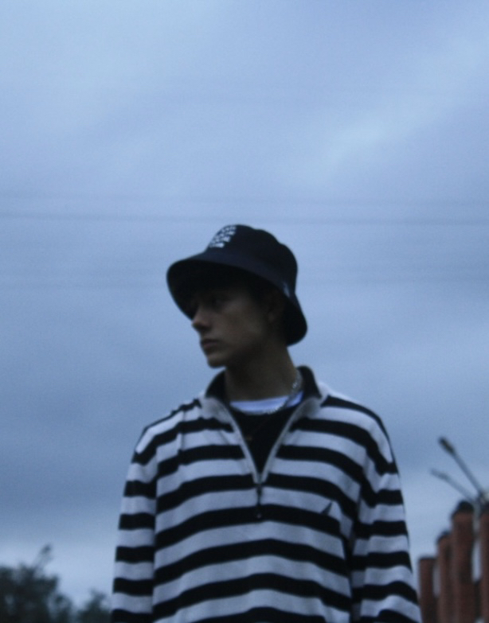

About me

My background
An analytical 3rd year Software engineering student at Universidad Autonoma de Manizales. My work ethic grants me versatile skills which helps me perform well under pressure and against environmental stressors.
I'm fully bilingual in spanish and english, having native speaking proficiency in both.
This is who I am, along with some of my favorite flicks
In my spare time,
I'm probably dabbling in new projects and learning about new things
to always stay on top of my game. Or trying to figure out how to
center a div (jk).
Other than that I'm most likely at the gym, watching anime, at a car
meet, relaxing with friends watching a beautiful sunset, taking "in
the moment" photos or simply spending time with my family.
I also enjoy to play videogames with friends every once in a while,
like the good old days.
Technical Abilities
Below are some of the programming languages, frameworks, and general technnologies I've most frequently used throughout my career
Certificates & Other
Other than my main degree, I also have completed the following courses / recieved the following certificates.
- MATLAB Fundamentals Certificate - September 10, 2023 (16.5 hrs)
- MATLAB Machine Learning Certificate - September 27, 2023 (12 hrs)
- MATLAB Deep Learning Certificate - November 21, 2023 (7 hrs)
Education
I'm currently pursuing my B.S. Degree in Software Engineering. I'm attending Universidad Autónoma de Manizales in Colombia and I'm in my 6th semester. My estimated graduation date is June 2026.
[ A cool picture of a sunset I took while on campus ]
Until next time
Thanks for taking the time to learn a little more about me! Feel free to check out my work and contact me if you have any questions or inquiries.
Plans
I possess a desire to gain more expertise and a passion to work alongside experienced engineers and assimilate their knowledge in the following areas:
- Web development (frontend/backend)
- Cybersecurity
- Artificial Intelligence
- Software development
- Technological innovations